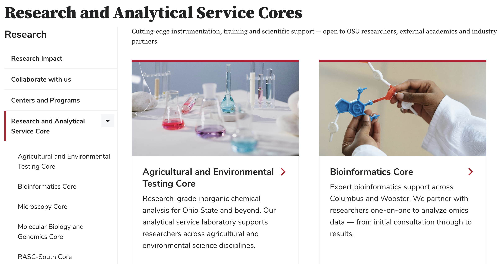
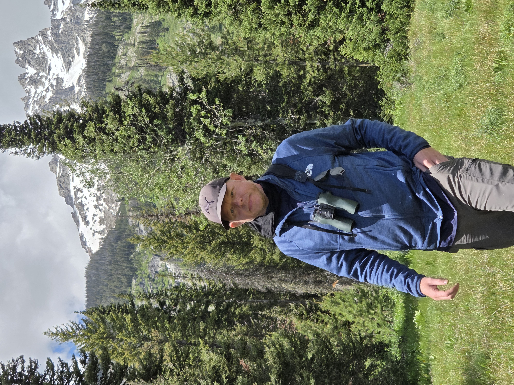
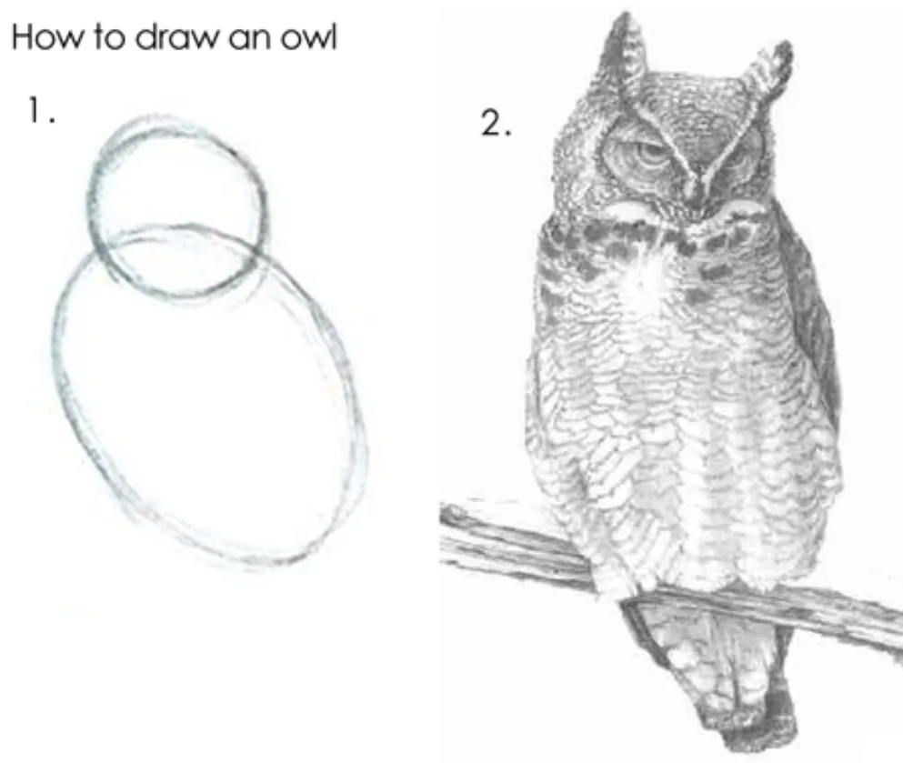

Introduction to the course
Practical Computing Skills for Omics Data (PLNTPTH 5006) – Autumn 2026
Jelmer Poelstra
August 26, 2026

Personal introductions
Introductions: Jelmer (instructor)
Position at Ohio State
Lead of the CFAES Bioinformatics Core and CFAES Microscopy Core on the Wooster campus.
Adjunct Professor in the Department of Plant Pathology, which offers this course.
What I work on in bioinformatics
Providing research assistance with omics data analysis.
Teaching — such as this course, workshops, and Code Club .
RASC
The bioinformatics and microscopy cores are part of Research & Analytical Service Cores (RASC):

Introductions: Jelmer (instructor)
Other things about me
Research background in evolutionary genomics & speciation.
In my free time, I enjoy playing soccer and, most of all, watching birds.

Introductions: Kelsey Starr (TA)
Background
- Previously a licensed practical nurse (LPN) with an Associate of Science degree.
- Undergraduate degree (2023–2025) at OSU in the Department of Plant Pathology.
- Completed undergraduate research on fungi in the lab of Dr. Jason Slot.
Introductions: Kelsey Starr (TA)
Current & future
Master’s student in the Department of Plant Pathology in the Soybean Pathology and Nematology Lab with Dr. Horacio Lopez-Nicora.
Researching a fungal species complex in the genus Cercospora that infects soybean.
- Returning to the lab of Dr. Jason Slot as a PhD student researching mushrooms in oak savannas.
Hobbies
- Playing games with my two kids.
- Hiking, finding and studying mushrooms.
Introductions: you
Briefly introduce yourself — mention:
Your name, lab, and department
Your main research interest or current research topic
One thing about you that is not work-related (like a hobby or fun fact)
Course content overview
Goals and focus of this course
Main focus
General, foundational “computing skills”.
For example, you will learn to:
- Code in the Unix shell and in R
- Organize, document, manage, and share your research data, code, and results
- Work with a remote supercomputer
Why learn all this?
To enable you to:
Work with large-scale “omics” datasets
Do your research more reproducibly and efficiently
Working with omics data
- Omics data analyses commonly require these computing skills. For example:
- Many omics data analysis programs are command-line tools.
- Datasets are often so large that a remote supercomputer is needed.
- The next lecture will give an introduction to omics data itself.
Working with omics data
- This course will use some example omics data,
but will not comprehensively cover specific omics analyses.
Follow-up courses!
To learn more about specific omics analyses, I highly recommend the following two courses:
- Genome Analytics by Dr. Jonathan Fresnedo-Ramírez (HCS 7004, Spring)
- Microbiome Informatics by Dr. Matthew Sullivan (MICRO 8161, Autumn)
Reproducibility
Reproducibility and replicability are two related but distinct ideas:
- Research is replicable when independent experiments produce the same results.
- Research is reproducible when re-analyzing the same data produces the same results.
Our focus is on reproducibility, because we have control over that.
Reproducibility
In general terms,
your research is reproducible when:
- You share your data
- You share your methods — in sufficient detail for anyone to redo what you did
- All reported data, methods, and results are congruent

Reproducibility
The course will cover various practices that help you work reproducibly. For example:
- Project organization and documentation (next week).
- Using code (throughout the course):
“The most basic principle for reproducible research is: Do everything via code.”
—Karl Broman, University of Wisconsin–Madison (source )
Can you think of any reasons why this might be true?
Efficiency & automation
When you use code instead of relying on point-and-click interfaces,
you can also improve automation and work more efficiently.
This can especially make a difference when you have to, for example:
- Do repetitive tasks
- Recreate a figure or redo an analysis after adding a sample
- Redo most or all of an analysis after finding an early mistake
Course schedule
| Week | Topic |
|---|---|
| 01 | Course intro & omics data |
| 02 | Project organization, OSC, Markdown |
| 03 | Unix shell – basics |
| 04 | Unix shell – working with files |
| 05 | Version control with Git & GitHub |
| 06 | Software management at OSC |
| 07 | Shell scripting & command-line tools |
| 08 | Using generative and agentic AI |
| Week | Topic |
|---|---|
| 09 | Slurm batch jobs at OSC |
| 10 | Workflow and data management |
| 11 | Nextflow/nf-core pipelines |
| 12 | R – basics |
| 13 | R – data wrangling & visualization |
| 14 | R – Quarto notebooks |
| 15 | R – for omics data (one guest lecture) |
| 16 | Recap & Student presentations |
A lot of content in this course builds on previous weeks. For example, after learning about version control in week 5, you will use it in all subsequent graded assignments.
Course practicalities
Zoom sessions
Code-along
We’ll do lots of “participatory live coding” / “code-along”.
This means I type and run code live, and you follow along on your own computer.
Having a second monitor is very helpful for this, if you have access to one.
Use the slow down (backwards arrows) Zoom reaction if you’re falling behind!
Etiquette
- To ask or answer questions:
- Feel free to unmute yourself to ask questions at any time
- Or use the Zoom chat
- Have your camera on whenever possible!
Course websites
GitHub website
The main website for this course is this “GitHub website”, which contains:
- Overviews of each week, including readings
- Slide decks and lecture pages
- Assignments and exercises
We’ll now do a quick tour of the GitHub website!
CarmenCanvas site
The CarmenCanvas site for this course is primarily used to:
- Send announcements about the upcoming week (turn on Notifications!)
- Put deadlines on your calendar
Office hours
- Jelmer: Thursdays at 1–3 pm (Zoom link, or Selby 018, Wooster)
- Kelsey: Mondays at 11 am–1 pm (Zoom link, or Kottman 201B, Columbus)
To book a slot, drop us an email — can be last-minute or even during the office hour.
Homework and grading
What your grade is made up of
You can earn a total of 100 points across:
- 5 graded assignments
- 4 checkpoints for your final project
Graded Assignments (50 pts)
A total of 5 graded assignments, worth 10 points each:
| Nr. | Topic | Week |
|---|---|---|
| GA1 | Markdown and Unix shell basics | 03 |
| GA2 | Unix shell and version control | 05 |
| GA3 | Software and shell scripts | 07 |
| GA4 | Slurm batch jobs | 09 |
| GA5 | Running Nextflow pipelines | 11 |
These are due on Sundays at the end of the listed weeks.
Final Project (50 pts)
Plan and implement a small data analysis project — with the following checkpoints:
| Nr. | What | Week | Points |
|---|---|---|---|
| FP1 | Proposal | 12 | 10 |
| FP2 | Progress report | 14 | 10 |
| FP3 | Oral presentation | 16 | 10 |
| FP4 | Final submission | 16 | 20 |
Datasets for the final project
Ideally, you’ll develop your own idea for a dataset and analysis. That way, you can work on something that’s directly useful for your own research. If you’re not able to do so, we can provide you with a dataset.
Using generative AI for graded work
- In week 8, we will cover the use of generative and agentic AI for coding and documentation.
- For assignments after that, and the final project:
- You are allowed or even encouraged to use AI for these purposes.
- The exact guidelines vary, and will be clearly stated on a case-by-case basis.
Ungraded homework
Readings
- Some weeks have readings such as papers.
- Always review the week’s slide decks and/or lecture pages.
- If we don’t finish a slide deck / page in class, study it at home.
Exercises
- A series of exercises to practice the week’s materials.
- Assigned mostly in weeks with no graded assignment.
Ungraded Assignments
- Occasionally assigned, and typically small.
- For example, surveys and account setup.
Week overview pages
Always read the week overview page before Monday’s class.
It summarizes the topics for that week, along with readings, exercises, and assignments.
It will be available on the GitHub website early on Monday morning at the latest.
While you should read the week overview before the class, you won’t have to do anything else for the week until after class. Any “prep work” for a given week is always done in the previous week.
Optional self-study material
Week overviews also have optional self-study material, often with chapters from these two books:
- Allesina (2019): Computing Skills for Biologists (library link )
- Buffalo (2015): Bioinformatics Data Skills (library link )
Weekly recitation session
In the optional but highly recommended weekly recitation, we’ll go over the preceding week’s exercises or Graded Assignment.
If you are interested in joining these sessions, please indicate your availability using this poll .
Practice is key to learning these skills!
This course is intended to be highly practical. If you don’t spend time practicing by yourself, you may not get much out of it.
Questions?
Click here to go to the next lecture, Omics Data